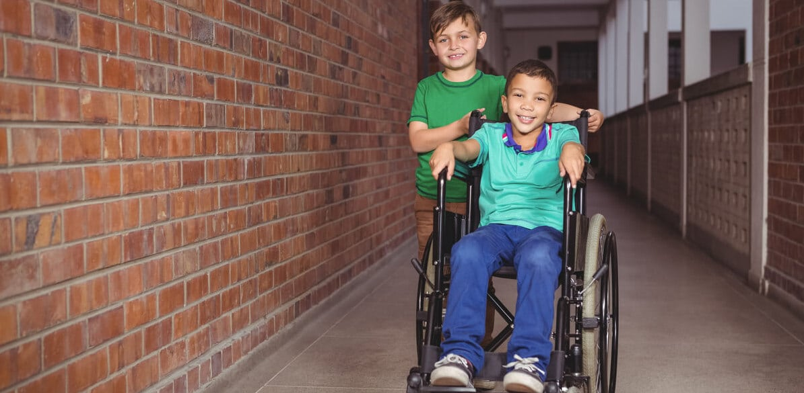

<div class="container contenido-principal d-flex flex-column justify-content-center align-items-center">
    <section>
        <div class="contenedor-imagen-enlace-column">
            <div class="contendor1-column contenedor-imagen">
                
            </div>
            <div class="contendor2-column contenedor-enlace">
                <h3>MISIÓN</h3>
                <p>Conoce nuestra misión</p>
                <p class="oculto">Somos una asociación civil sin fines de lucro que tiene como fines sociales la
                    atención de personas jóvenes y adultas con discapacidad en el aspecto social, laboral y personal y
                    la concientización en la comunidad de la problemática de la discapacidad
                    Brindando servicios de atención integral tendientes a mejorar su calidad de vida mediante, la
                    igualdad de oportunidades, la promoción de la inclusión social y el trabajo de apoyo a la familia.
                </p>
                <button class="btn btn-white" type="button">Ver más</button>
            </div>
        </div>
        <div class="contenedor-imagen-enlace-column">
            <div class="contendor1-column contenedor-imagen">
                
            </div>
            <div class="contendor2-column contenedor-enlace color2">
                <h3>VISIÓN</h3>
                <p>Conoce nuestra visión</p>
                <p class="oculto">Ser una organización que brinde atención de calidad para personas adultas con
                    discapacidad, siendo reconocida en la comunidad por la seriedad, responsabilidad y ética de su
                    trabajo.
                    Ser una organización estable en recursos humanos con una solvencia financiera que le permita
                    mantenerse
                    y desarrollarse en el tiempo.</p>
                <button class="btn btn-white" type="button">Ver más</button>
            </div>
        </div>
        <div class="contenedor-imagen-enlace-column">
            <div class="contendor1-column contenedor-imagen">
                
            </div>
            <div class="contendor2-column contenedor-enlace">
                <h3>OBJETIVOS</h3>
                <p>Conoce nuestros objetivos</p>
                <ul class="oculto">
                    <li>Actuar en pos de un mundo socio-laboral más inclusivo, teniendo como pilares básicos la
                        integración
                        en la sociedad por medio del trabajo, la socialización y la creación y equiparación de
                        oportunidades
                        a través de :</li>
                    <li>Ofrecer y gestionar un Taller Protegido de Producción para posibilitar la inserción laboral de
                        personas con discapacidad, generando puestos de trabajo y brindando servicios de adaptación
                        laboral
                        y social acordes a las posibilidades, necesidades e intereses.</li>
                    <li>Ofrecer y gestionar un Centro de Día, para aquellas personas que se ven imposibilitadas de
                        acceder
                        al taller protegido., proponiendo vivencias integradoras y socializadoras tendientes a alcanzar
                        y
                        desarrollar el máximo posible de sus potencialidades.</li>
                    <li>Ofrecer un Hogar Permanente Para personas, que por situaciones clínicas o socio familiares no
                        puedan
                        acceder a las necesidades básicas de vivienda, y protección social ofreciéndoles refugio y
                        seguimiento apropiado.</li>
                    <li>Realizar actividades extra-laborales, recreativas y socializantes como: Encuentros Deportivos
                        Recreativos. Natación. Equino-terapia. Talleres de Cocina, Pintura, Música, Actuación teatral,
                        Expresión Corporal y Actividad folklórica.</li>
                    <li>Difundir, informar e integrar a la comunidad a las actividades de la asociación, permitiendo la
                        participación ciudadana solidaria, mediante la difusión continua y la mejora de las
                        infraestructuras
                        de servicio a los beneficiarios.</li>
                </ul>
                <button class="btn btn-white" type="button">Ver más</button>
            </div>
        </div>
    </section>
</div>